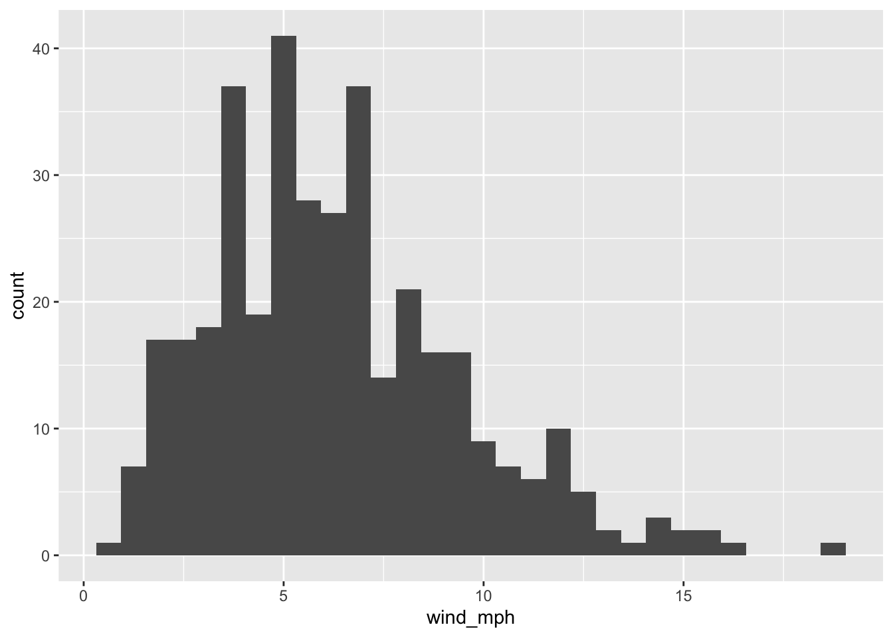
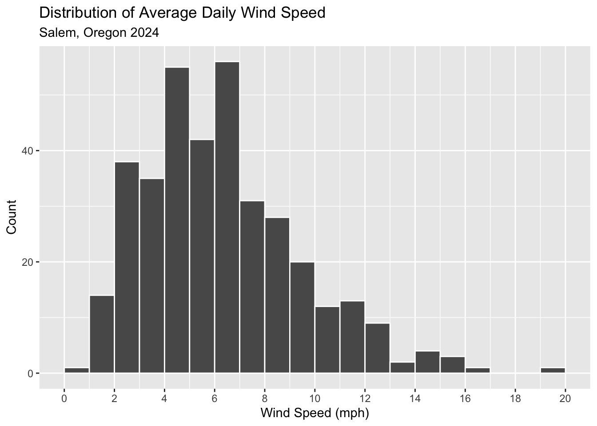
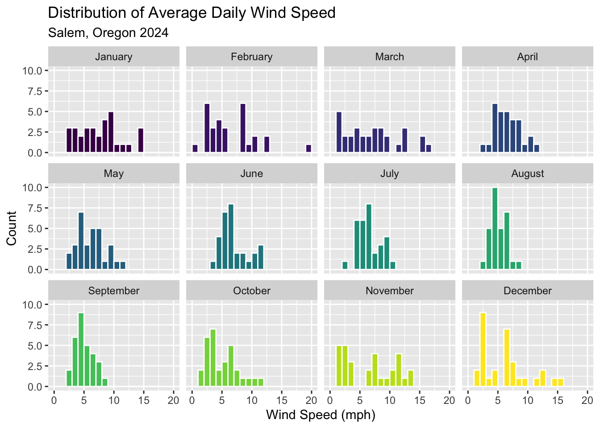
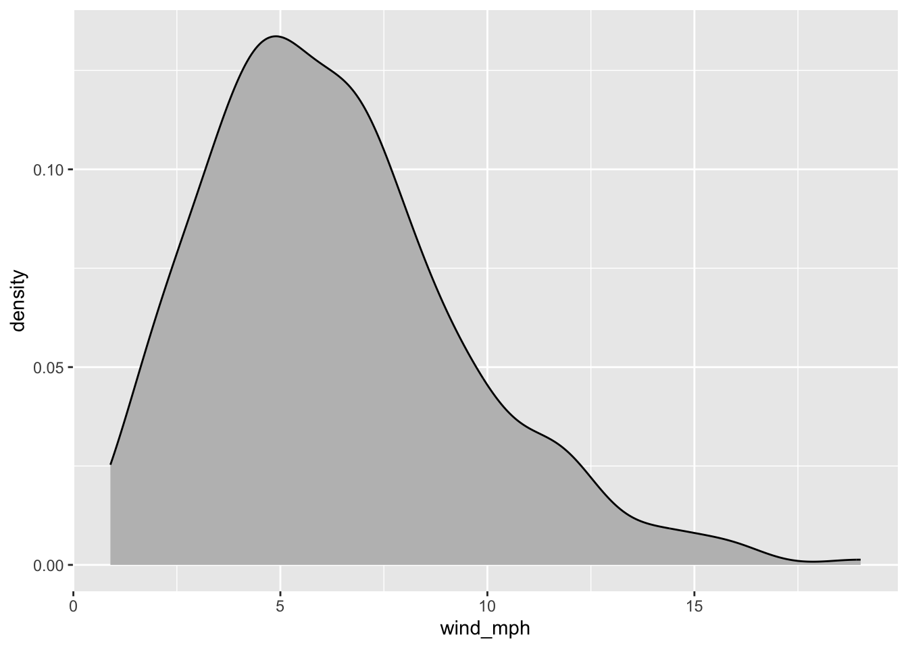
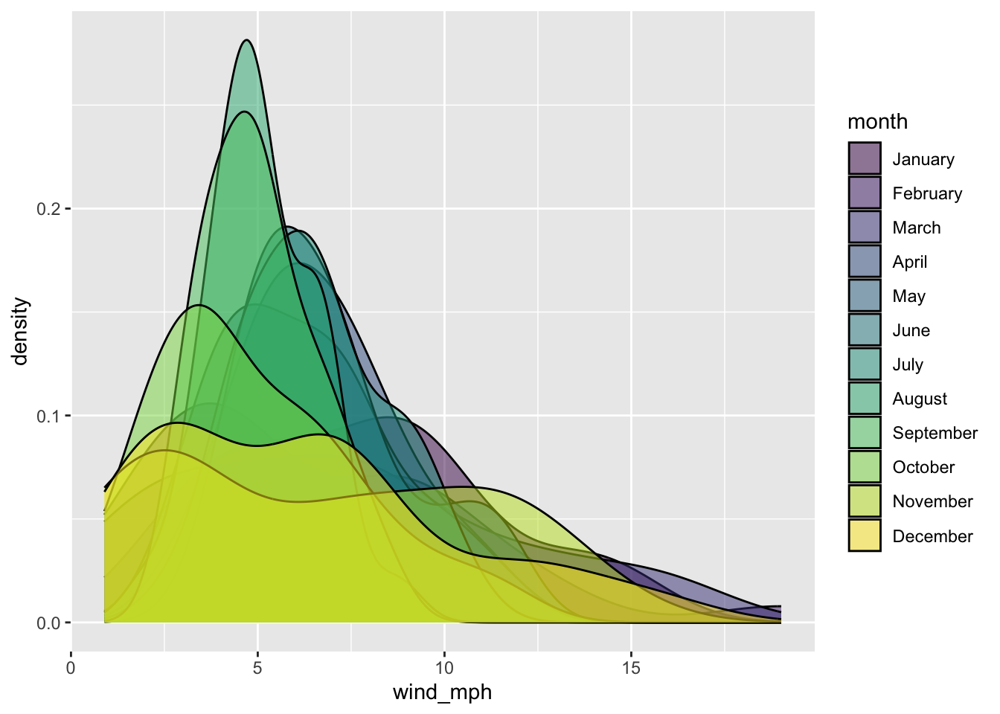
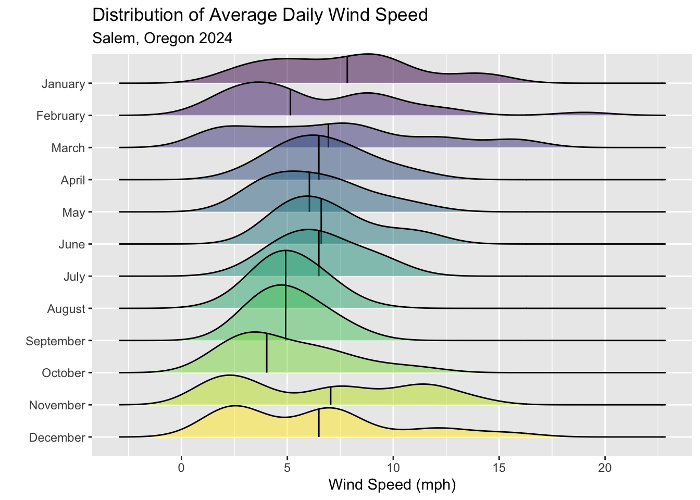
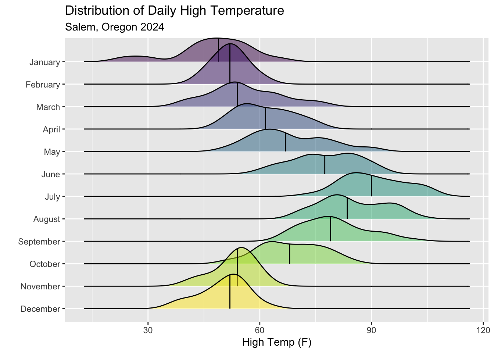
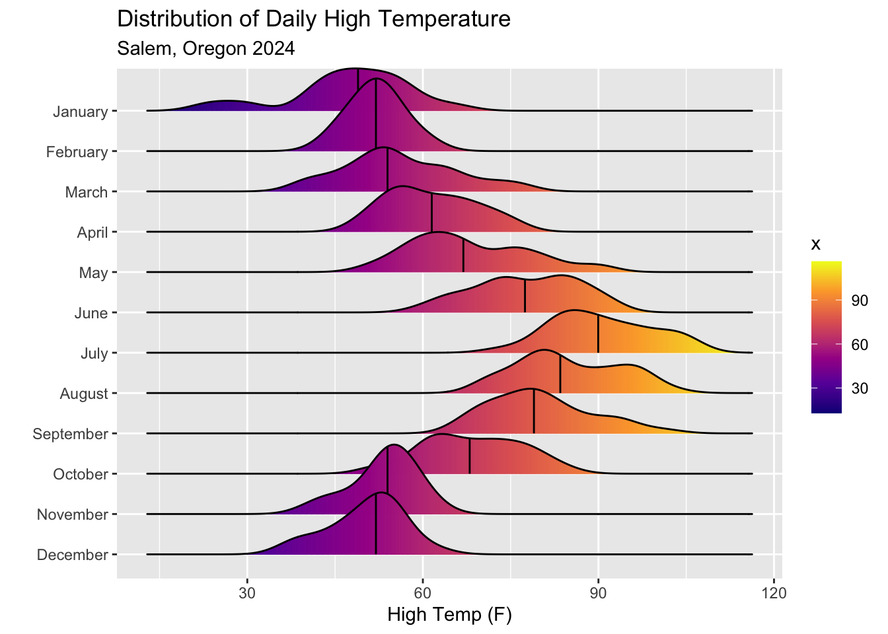
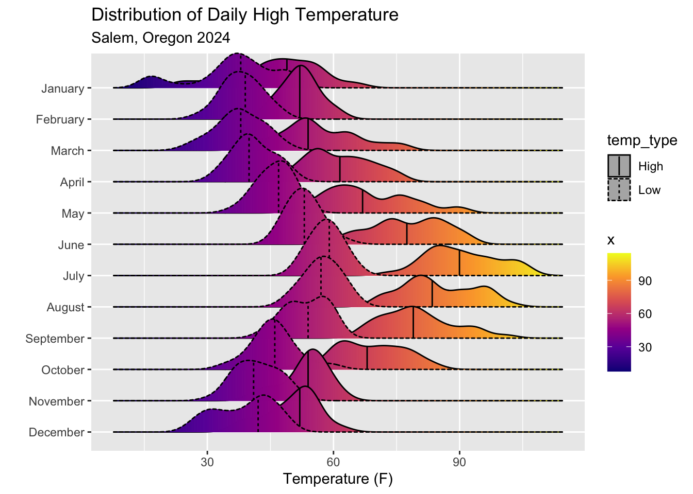
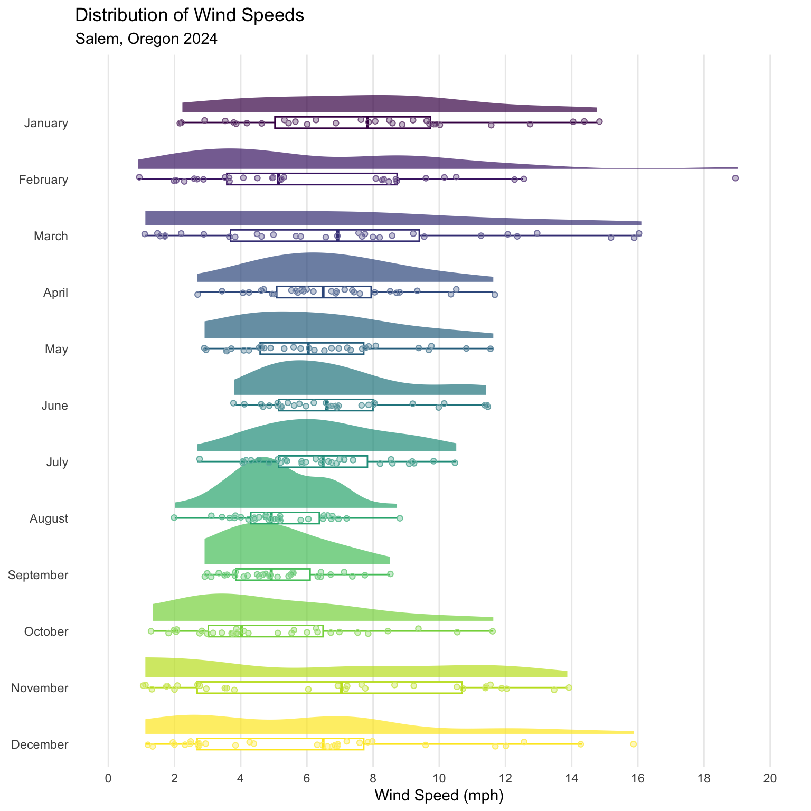

Lab 4 | Refining Visualizations & Visualizing Uncertainty
ST 437 Data Visualization
Getting Started
First, ensure you have the necessary packages installed and loaded.
Downloading R-packages
Use install.packages('Name of Package') to install any R packages you don’t have.
Before moving on to the remainder of this activity, try rendering the document to both html and pdf. It’s generally a good idea to render your document periodically so that if there’s an issue, you can spot it more easily.
Load the Data
Make sure you have the salem_weather_2024.csv file downloaded from Canvas and saved in the same location as this .qmd file. The dataset contains temperature and wind speed information for Salem, Oregon in 2024.
It’s helpful to have your code chunks named. Give the following chunk a label by clicking on the small, faint gear icon in the upper right corner of the chunk. In the Chunk Name field, specify a name for the code chunk below. I recommend doing this for all remaining chunks!
The dataset contains four variables
DATE: the dateTMAX: the maximum temperature in tenths of degrees CelsiusTMIN: the minimum temperature in tenths of degrees CelsiusAWND: the average daily wind speed in tenths of meters per second
Clean the Data
Currently the units that temperature and wind speed are reported in area a little unusual. At least not units we commonly communicate in. Use the mutate function to convert the temperature variables to degrees Fahrenheit and the wind speed variable to miles per hour. Use the following conversions:
one tenth degrees Celsius can by converted to degrees Fahrenheit by multiplying by 0.18 then adding 32
one tenth meters per second is approximately 0.2237 miles per hour
Additionally, remove any rows with NA values (hint: use drop_na() at the end of your pipe sequence.
Histograms
Plot 1: Basic Histogram (Wind Speed)
Create a basic (not too polished) histogram that displays the distribution of average daily wind speed (in miles per hour).
Plot 2: Polished Histogram (Wind Speed)
Now create a polished version of the histogram. Polishing checklist:
Plot Title
Informative labels
Set a binwidth
Set the
boundaryargument ingeom_histogramto 0 so that the bins are aligned with whole numbersAdd white outlines to the bins so that they can be seen more distinctly
Add x-axis breaks at each even number within the range of the windspeeds (hint: use
scale_x_continuous(breaks = seq(0, 20, by = 2)))

Plot 3: Histograms Faceted by Month (Wind Speed)
Create a new column in the dataset that contains the month of the observation. Within mutate use the month function to extract the month from DATE. To have the displayed by its full name, use the label=TRUE and abbr=FALSE arguments in the month function.
Create a series of histograms, one for each month, by faceting by month. Polishing checklist:
Plot Title
Informative labels
Set a binwidth
Set the
boundaryargument ingeom_histogramto 0 so that the bins are aligned with whole numbersAdd white outlines to the bins so that they can be seen more distinctly
Adjust x-axis breaks so that the labels are readable (hint: use
scale_x_continuous)Add color to each month’s histogram
Remove the unnecessary legend since each facet has a label (hint: use
guides(fill = "none"))

Consider: What information do the faceted histograms provide that the single histogram didn’t?
Density Plots
Plot 4: Basic Density Plot (Wind Speed)
Create a basic (not too polished) density plot that displays the distribution of average daily wind speed (in miles per hour).

Plot 5: Overlaid Density Plots (Wind Speed)
Overlay transparent density plots filled by month.

Plot 6: Ridge Plots (Wind Speed)
Even when we use transparent density plots, with 12 different levels of month, its difficult to interpret anything meaningful from the plot. Try using a ridge plot instead.

Plot 7: Ridge Plots (High Temps)

Plot 8: Ridge Plots (High Temps with Gradient)

Plot 9: Ridge Plots (High and Low Temps with Gradient)

Rain Cloud Plots
Plot 10: Rain Cloud Plot (Wind Speed)
